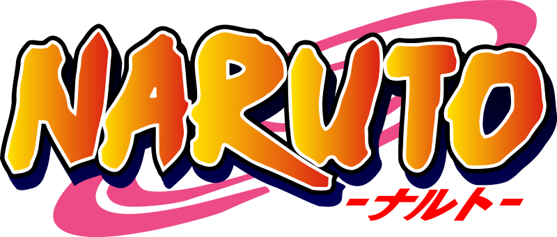

MOTHER FUCKERS

Itachi Uchiha
Itachi Uchiha (うちはイタチ, Uchiha Itachi) was a shinobi of Konohagakure's Uchiha clan who served as an Anbu Captain. He later became an international criminal after murdering his entire clan, sparing only his younger brother, Sasuke.
Zenitsu Agatsuma
Zenitsu began to refer to Jigoro as 'Gramps' and began to train alongside Gramps' other disciple, Kaigaku. One day when he was training, Zenitsu climbed up a tree out of fear that he was being trained to death and as he began to panic, a stroke of lightning hit him causing his hair to turn blonde.
Edward Elric
Edward, titled the Fullmetal Alchemist (鋼の錬金術師, Hagane no Renkinjutsushi, lit. Alchemist of Steel), is the youngest State Alchemist in the history of the fictional country of Amestris. His left leg was divinely severed in a failed attempt to resurrect his dead mother, and then his right arm was taken in exchange for his brother's soul. His missing limbs have been replaced with sophisticated prosthetics called automail (機械鎧オートメイル, ōtomeiru). He and his younger brother, Alphonse, who lost his entire body and is spiritually bound to a suit of armor, scour the world in search of the Philosopher's Stone in the hopes of restoring their bodies.

Levi Ackerman
Levi Ackerman is the tritagonist of the Attack on Titan anime/manga series. He is a captain in the Survey Corps, known to be the strongest soldier alive. He has a harsh and unsocial personality, but is well-regarded by his subordinates and he cares about their lives.
Madara Uchiha
Madara Uchiha (うちはマダラ, Uchiha Madara) was the legendary leader of the Uchiha clan. He founded Konohagakure alongside his childhood friend and rival, Hashirama Senju, with the intention of beginning an era of peace. ... Madara, however, rewrote his death and went into hiding to work on his own plans.
Ken Kaneki
The story follows Ken Kaneki, a student who barely survives a deadly encounter with Rize Kamishiro, his date who reveals herself as a ghoul and tries to eat him. ... This was accomplished because some of Rize's organs were transferred into his body, and now, like normal ghouls, he must consume human flesh to survive.
Roy Mustang
In the series, Mustang is a State Alchemist of Amestris' State Military, as well as the superior of the series' protagonist, Edward Elric. Mustang holds the title of "Flame Alchemist" (焔の錬金術師, Honō no Renkinjutsushi) for his ability to create fire with alchemy, and he ambitiously strives to become the next leader of Amestris. Despite his ambition, as the series continues, Mustang decides to overthrow the State Military after his best friend, Maes Hughes, is killed by the homunculi, who are controlling the Military.
Garou
Garou (ガロウ, Garō; Viz: Garo) is a villain, a martial arts prodigy, the self-proclaimed "Hero Hunter," and a major adversary of the Hero Association and Monster Association. He is a former disciple of Bang but was expelled from his dojo for going on a rampage. Because of his fascination with monsters, he is commonly called the "Human Monster." Sitch of the Hero Association views him as a grave threat to the organization despite being only a human.
madebyKala©2021
Back to Top